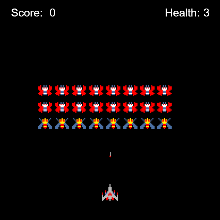

Exploring Computer Sciences
In exploring computer sciences you get to cover the basics of html and java script using code.org. During my time in the class we did many small projects like creating a webpage about something you want to share with other people, I did my webpage about John Oliver, view my website here. We also got to learn about how to plot and move shapes and sprites, through this, we had to learn about random numbers, variables, and functions. We later learned how to do this with sprites and we learned how to add text and how to create animations/movements that only occur on a user input. After we learned about these things we got to create a game with all of the information we learned, I created a galaga like game, it’s not great but it works.(My galaga game)Throughout the whole class I was being challenged and learning new ways to change a scene and everything I leaned has been helpful for me, even outside of class.
Computer Science Principles
 In computer science principles you get to learn about some of the smaller things like compression of data as well as deepening understanding of html. While I was, and as of writing this still am, in computer science principles, we covered how data is stored and compressed, we learned about binary and hexadecimal numbers and how to apply that to the rgb color system. We got to work on how data is compressed and when to use different types of compression. We even got to develop our own app and program it, I did mine on a youtube channel called gamegrumps(My app). The class gives its student enough freedom to explore and widen their skills themselves while it’s teaching them what they need to know to advance
In computer science principles you get to learn about some of the smaller things like compression of data as well as deepening understanding of html. While I was, and as of writing this still am, in computer science principles, we covered how data is stored and compressed, we learned about binary and hexadecimal numbers and how to apply that to the rgb color system. We got to work on how data is compressed and when to use different types of compression. We even got to develop our own app and program it, I did mine on a youtube channel called gamegrumps(My app). The class gives its student enough freedom to explore and widen their skills themselves while it’s teaching them what they need to know to advance